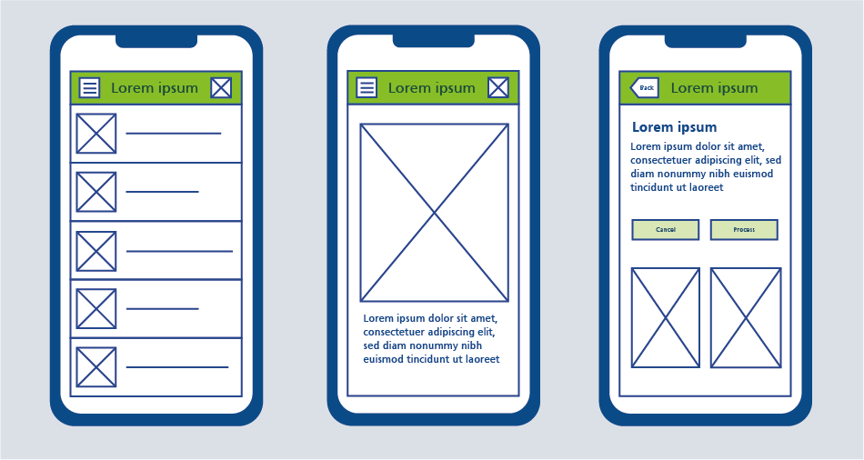
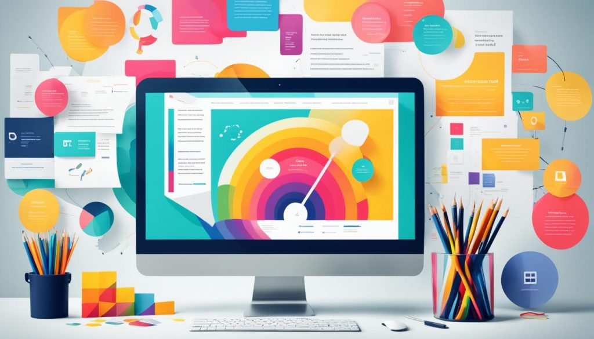
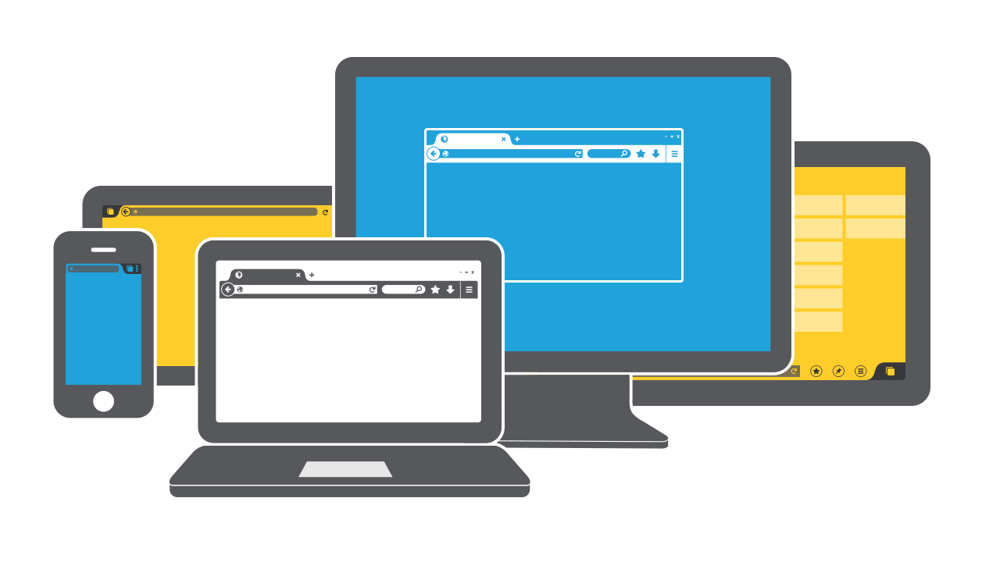
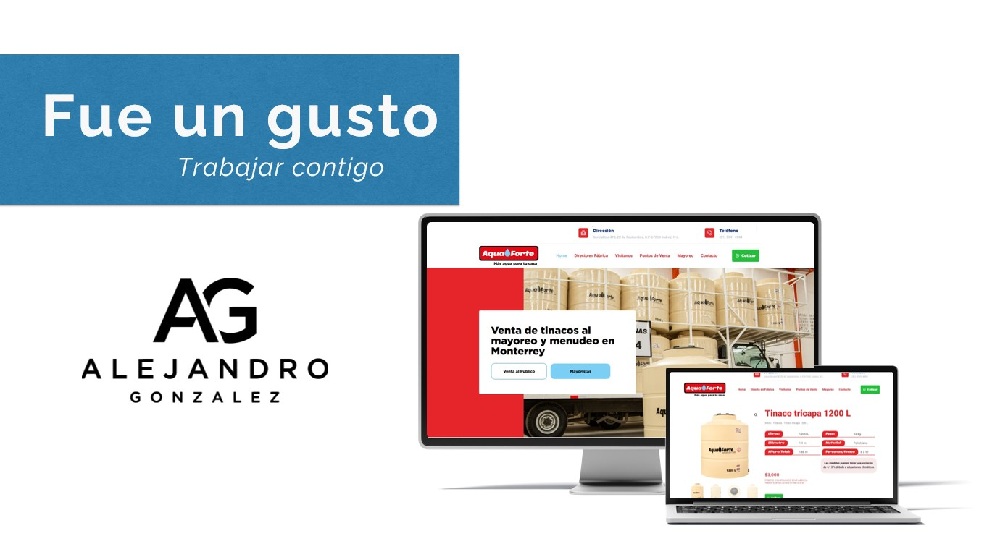
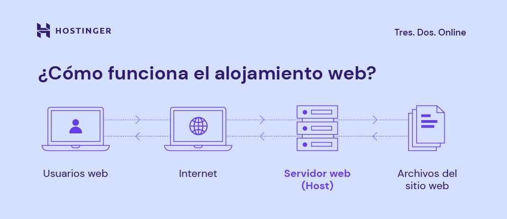

.jpg) GLOW RUSHGLOW RUSH
GLOW RUSHGLOW RUSH
.png) |
.png) |
 |
|---|
DISEÑO DE SITIOS WEB
Consulta inicial: Reunión con el cliente para definir objetivos del sitio (por ejemplo, informativo, e-commerce, portafolio), público objetivo, funcionalidades deseadas y preferencias de diseño. |
|
|---|---|
Investigación y planificación: Análisis de la industria, competidores y necesidades específicas, además de la creación de una estructura o mapa del sitio (sitemap). |
|
Diseño de wireframes o prototipos: Creación de esquemas básicos (wireframes) o maquetas interactivas que muestran la disposición de los elementos (menús, botones, contenido) antes del diseño final. |

|
Diseño visual: Desarrollo de la estética del sitio, incluyendo paleta de colores, tipografía, imágenes y estilo general, alineado con la identidad de la marca. |

|
Desarrollo técnico:
|

|
Optimización responsiva: Asegurarse de que el sitio se vea y funcione bien en dispositivos móviles, tabletas y computadoras. |
|
Pruebas: Revisión del sitio para corregir errores, verificar velocidad de carga, compatibilidad con navegadores y funcionalidad de enlaces o formularios. |
|
Entrega: Lanzamiento del sitio web en un servidor (hosting) y transferencia de archivos o acceso al cliente. |

|
Documentación o capacitación: Instrucciones básicas para que el cliente gestione el sitio (si usa un CMS) o una guía de mantenimiento. |

|
.jpg)